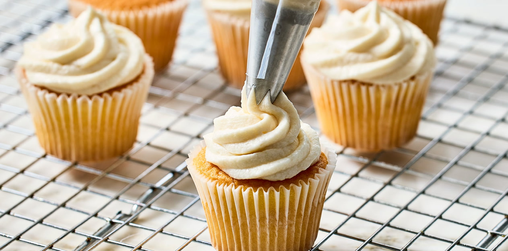
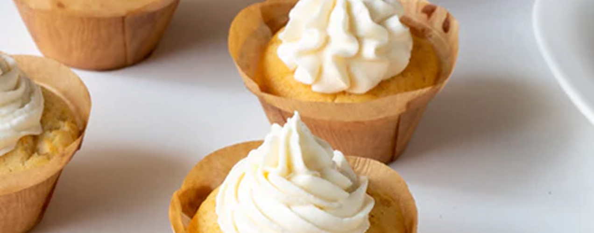
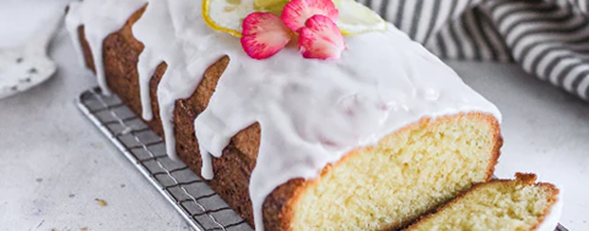

Do you know that frosting and icing are actually two different things?
Frosting and Icing are often used interchangeably when we talk about decorating a cake. However, in reality, the two are extremely different from each other and you might have wondered the difference between them at some point while baking.
The reason why they are often mistaken for each other is that they’re both used for decorating baked goods. But the way each of them is used is quite different from each other.
The table below highlights the main differences between frosting and icing w.r.t their texture, ingredients, how they are made, and their looks.

Frosting is the thick, fluffy mixture that is used to decorate our cakes and cupcakes. It is the stuff that holds shape on your cakes and looks pretty in various designs.
The frosting is usually made from some kind of fat like Butter or Cream along with sugar and other flavoring agents like Vanilla, Chocolate, Lemon etc. And I’m not sure if it’s a rule, but Frosting is always whipped.
There are various types of frostings:

Icing is a thin, runny sugary liquid that hardens on cooling. Most commonly, icing is used to decorate Donuts and Cinnamon Rolls but it is also used on pound cakes like Lemon Pound Cake.
The main ingredient while making icing is Sugar mixed with water, milk, or cream as per the recipe. Icing can also be flavored with Vanilla or Lemon Juice and then poured over warm baked goods.
The icing becomes more opaque white in color as everything cools down and the sugar crystals harden.
Icing can be made in various levels of viscosity depending on the usage but it can never hold its shape as frosting does.
Thanks for reading. I hope we could clarify your confusion between frosting and icing. Do let me know if you want to know anything particular.